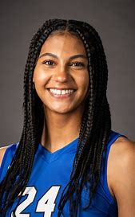
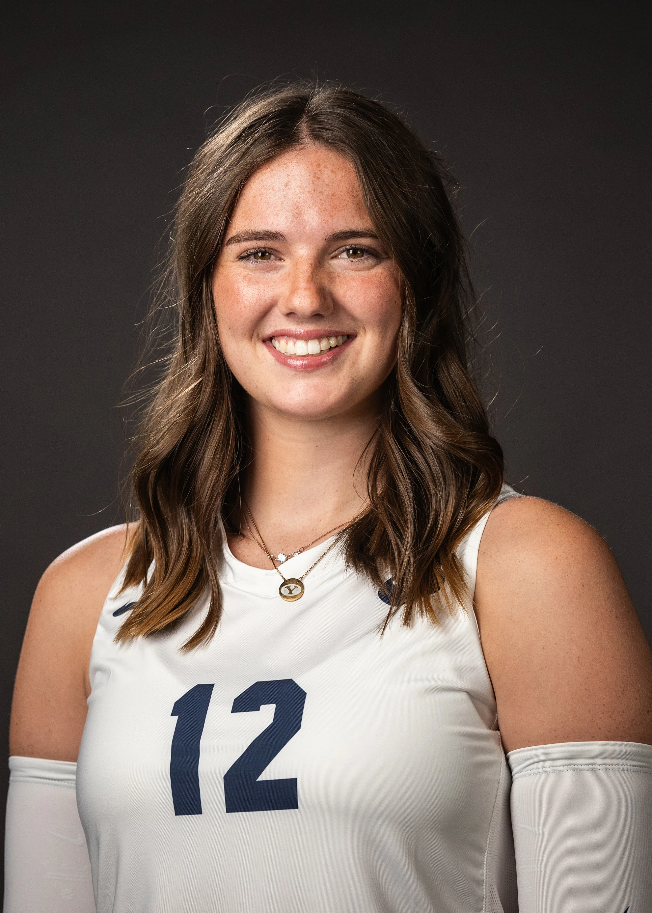
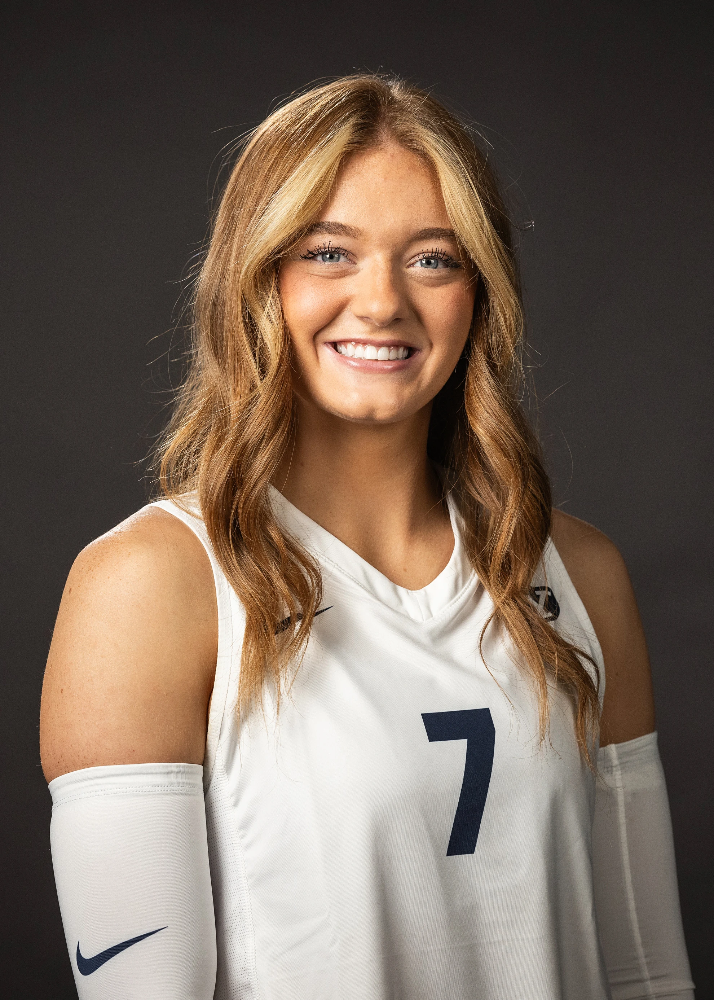

I Love BYU Volleyball!

Significant Victory and Key Players
BYU women's volleyball team has been making waves in the Big 12 conference this season. The team recently celebrated a significant victory with a 3-0 sweep against Houston, showcasing their resilience and skill. Middle blocker Brielle Kemavor played a pivotal role, earning the Big 12 co-defensive player of the week for her outstanding performance.
BYU Volleyball 2024
Player Profiles
- Brielle Kemavor
- Middle Blocker
- Virginia 
- Claire Little
- Outside Hitter
- California 
- Alex Bower
- Setter
- Idaho 
Impact and Inspiration
The team's dedication and hard work have been an inspiration to fans!The BYU women's volleyball team is truly inspirational, showcasing remarkable resilience and talent. Despite being a relatively young team, they have consistently performed at a high level, finishing sixth in the Big 12 conference and earning a spot in the NCAA tournament for the 13th consecutive season. Players like Claire Little, Brielle Kemavor, and freshman Alex Bower have been standout performers, earning multiple accolades and leading the team with their exceptional skills. Their dedication, teamwork, and ability to overcome challenges serve as a powerful example of what can be achieved with hard work and determination. The team's journey is not just about winning matches, but also about inspiring others to pursue their goals with passion and perseverance.